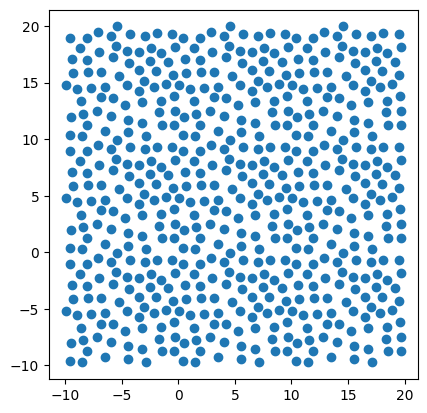

import math
import random
import copyIntroduction
This post goes through the code for a Python Poisson Disk Sampling package. The code comes from Robert Bridson’s algorithm. The posts from Sighack and Jason Davies are also helpful resources to have.
Basically, we’ll start with one point then add another point within certain bounds from that one. We’ll continue adding new points off of these points and so on as long as the new points aren’t too close to any other point. When no new points can be added, the algorithm is done.
The points in this code will form a repeating pattern if allowed.
Code
We’ll start by importing the libraries.
Then we’ll create a Point class. It’s basically just a holder for the location of a single point.
class Point:
"""
Class for a singluar point
Attributes
----------
order: int
The order the point was inserted into the class list
x: float
x-location of the point
y: float
y-location of the point
"""
def __init__(self,
order: int,
x: float,
y: float) -> None:
"""
Constructs a point
Parameters
----------
order: int
The order the point was inserted into the class list
x: float
x-location of the point
y: float
y-location of the point
"""
self.order = order
self.x = x
self.y = y
def __repr__(self) -> str:
"""repr for Point class"""
return f'Point(order={self.order}, x={self.x}, y={self.y})'
def __str__(self) -> str:
"""str for Point class"""
return f'{self.order}: {self.x}, {self.y}'
def point_information(self) -> list:
"""Returns the Point information as a list"""
return [self.order, self.x, self.y]Now, we’ll start to build up the main code section.
First is the PoissonDiskSampling class. This will hold the main code for the algorithm.
We’ll first start out with the __init__ method to set up the basic attributes. We’ll need to keep track of:
radiusto know how far to search around a point. This determines how close points are together.grid_heightandgrid_widthto know how big of an area to fill.sample_limitto know when to stop trying for new points. This can affect how filled in the area gets.seedto make it reproducible.initial_pointfor a starting point, if one is provided.
These will be used to build the backgroud grid, grid. This is used to speed up comparing a potential point to the current list of accepted points, points. Finally, there will be a very similar list of points that are kept to base potential points, active_list.
class PoissonDiskSampling:
"""
Class for poisson disk sampling points
Attributes
----------
points: list
The main list of points
"""
def __init__(self,
radius: float,
grid_width: float,
grid_height: float,
sample_limit: int = 30,
seed: int = None,
inital_point: Point = None) -> None:
"""
Constructor for the poisson disk sample
Parameters
----------
radius: float
The minimum distance between points
grid_width: float
The width of the grid
grid_height: float
The height of the grid
sample_limit: int
The number of times to try to find a new sample point for
each attempt with an active point. Decreasing will speed up
the process, but increasing will fill in more points.
seed: int
Seed for the random number generator, if needed.
inital_point: Point
Inital point to use. If one is not provided, then one is
choosen at random. This is mostly used for testing.
"""
self.radius = radius
self.grid_width = grid_width
self.grid_height = grid_height
self.sample_limit = sample_limit
# These are called often in the code. So they are pre-calculated
self.cell_size: float = self.radius / math.sqrt(2)
self.bounds: int = math.ceil(self.radius/self.cell_size) # 2
self.wrap_cutoff = self.bounds*2
self.grid_cell_width: int = math.ceil(
self.grid_width / self.cell_size)
self.grid_cell_height: int = math.ceil(
self.grid_height / self.cell_size)
self.radius_2: float = (self.radius)**2
# These hold the points, one as a list and one as a 2d array.
# The grid has room to hold duplicated points on the edges to
# allow checking for point distance when the pattern repeats.
self.points: list[list] = []
self.grid: list[list] = [
[None for i in range(self.grid_cell_height + self.bounds*2)]
for j in range(self.grid_cell_width + self.bounds*2)]
# This is list of point to sample from until they are checked
# for the self.sample_limit attribute
self.active_list: list = []We can finish up the rest of the __init__ method that will sample all the points. It starts by determining the first point. Then uses a while loop to sample new points until all of the accepted points have been checked.
# Set up the start
if seed is not None:
random.seed(seed)
if inital_point is not None:
self.insert_point(inital_point)
else:
self.insert_point(
Point(0,
random.random() * self.grid_width,
random.random() * self.grid_height))
# Continue until all points are checked
# Randomly pull a point that hasn't been removed each time
while self.active_list:
self.sample(random.randrange(len(self.active_list)))In the previous code block, the sample method is called in a while loop. We’ll now build up two other methods, insert_point and check_neighbors, to then get to sample.
The insert_point method takes a new point and inserts it into the grid and points list. The main difficulty is in checking the edges to have points repeat if needed.
def insert_point(self,
p: Point) -> None:
"""
Inserts a new point into the self.points list and the self.grid
array. If the point is near the edge, extra points will be added
to the grid so the pattern can repeat itself without having
points too close to each other.
"""
cell_x: int = math.floor(p.x/self.cell_size) + self.bounds
cell_y: int = math.floor(p.y/self.cell_size) + self.bounds
self.grid[cell_x][cell_y] = p
self.points.append(p.point_information())
# If on the edges, loop around
# Check along sides
flip_x: bool = False
cell_x_wrap: int
x_wrap: float
if cell_x < self.wrap_cutoff:
flip_x = True
cell_x_wrap = self.grid_cell_width + cell_x
x_wrap = p.x + self.grid_width
elif cell_x >= self.grid_cell_width:
flip_x = True
cell_x_wrap = cell_x - self.grid_cell_width
x_wrap = p.x - self.grid_width
if flip_x:
self.grid[cell_x_wrap][cell_y] = Point(p.order, x_wrap, p.y)
# Check along top and bottom
flip_y: bool = False
cell_y_wrap: int
y_wrap: float
if cell_y < self.wrap_cutoff:
flip_y = True
cell_y_wrap = self.grid_cell_height + cell_y
y_wrap = p.y + self.grid_height
elif cell_y >= self.grid_cell_height:
flip_y = True
cell_y_wrap = cell_y - self.grid_cell_height
y_wrap = p.y - self.grid_height
if flip_y:
self.grid[cell_x][cell_y_wrap] = Point(p.order, p.x, y_wrap)
# Check corners
if flip_x and flip_y:
self.grid[cell_x_wrap][cell_y_wrap] = Point(
p.order, x_wrap, y_wrap)
# Insert into active list
self.active_list.append(p)The check_neighbors method uses the grid to see if the new points is too close to any other points.
def check_neighbors(self,
x: float,
y: float) -> bool:
"""Checks if there are any points too close a location."""
cell_x: int = math.floor(x/self.cell_size) + self.bounds
cell_y: int = math.floor(y/self.cell_size) + self.bounds
column: int
row: int
for column in range(cell_x - 2, cell_x + 3):
for row in range(cell_y - 2, cell_y + 3):
neighbor: Point | None = self.grid[column][row]
if neighbor:
dx: float = neighbor.x - x
dy: float = neighbor.y - y
if (dx**2 + dy**2) < self.radius_2:
return False
return TrueThe sample method takes in an index for a point from the active_list, pulls a new point around that point, and then checks to see if it’s good with check_neighbors. If it is good, then it calls insert_point. If enough attempts are made without adding a new point, the first point is removed from active_list.
Finally, the sample_points method pulls everything together and repeated the points pattern if requested.
def sample_points(radius: float,
grid_width: float,
grid_height: float,
sample_limit: int = 30,
repeat_percentage: float = .25,
seed: int = None,
inital_point: Point = None) -> None:
"""
Creates a list of points from poisson disk sampling with optional
repeats along the edges.
Parameters
----------
radius: float
The minimum distance between points
grid_width: float
The width of the grid
grid_height: float
The height of the grid
sample_limit: int
The number of times to try to find a new sample point for
each attempt with an active point. Decreasing will speed up
the process, but increasing will fill in more points.
repeat_percentage: float
How much to repeat points around the borders. 0 for no repeats
1 for full repeats.
seed: int
Seed for the random number generator, if needed.
inital_point: Point
Inital point to use. If one is not provided, then one is
choosen at random. This is mostly used for testing.
"""
samp: PoissonDiskSampling = PoissonDiskSampling(radius=radius,
grid_width=grid_width,
grid_height=grid_height,
sample_limit=sample_limit,
seed=seed,
inital_point=inital_point)
if repeat_percentage == 0:
return samp.points
# Find boundaries from repeat_percentage
width_min: float = 0 - (grid_width * repeat_percentage)
width_max: float = grid_width + (grid_width * repeat_percentage)
height_min: float = 0 - (grid_height * repeat_percentage)
height_max: float = grid_height + (grid_height * repeat_percentage)
# Fill list with base points and copies for repetition
points: list = copy.deepcopy(samp.points)
column: int
row: int
p: list
for column in range(-1, 2):
for row in range(-1, 2):
if column != 0 or row != 0:
rep_points: list = copy.deepcopy(samp.points)
for p in rep_points:
p[1] = p[1] + column * grid_width
p[2] = p[2] + row * grid_height
# Check if the repeated points are in bounds
rep_points = [p for p in rep_points
if p[1] >= width_min
and p[1] <= width_max
and p[2] >= height_min
and p[2] <= height_max]
points.extend(rep_points)
return pointsHere’s some example code. The repetition of points is visible here.
import matplotlib.pyplot as plt
import numpy as np
import PoissonDiskSampling as pds
height = 20
width = 30
radius = 2
samp = pds.sample_points(radius, width, height, seed=0)
points = np.array(samp)
fig, ax = plt.subplots()
ax.scatter(points[:, 1], points[:, 2])
for p in points:
ax.annotate(int(p[0]), (p[1], p[2]))
ax.set_aspect('equal')
plt.show()